01Cárgala por completo
Antes del primer uso, cárgala por completo en su base magnética. Tarda menos de 2 horas.
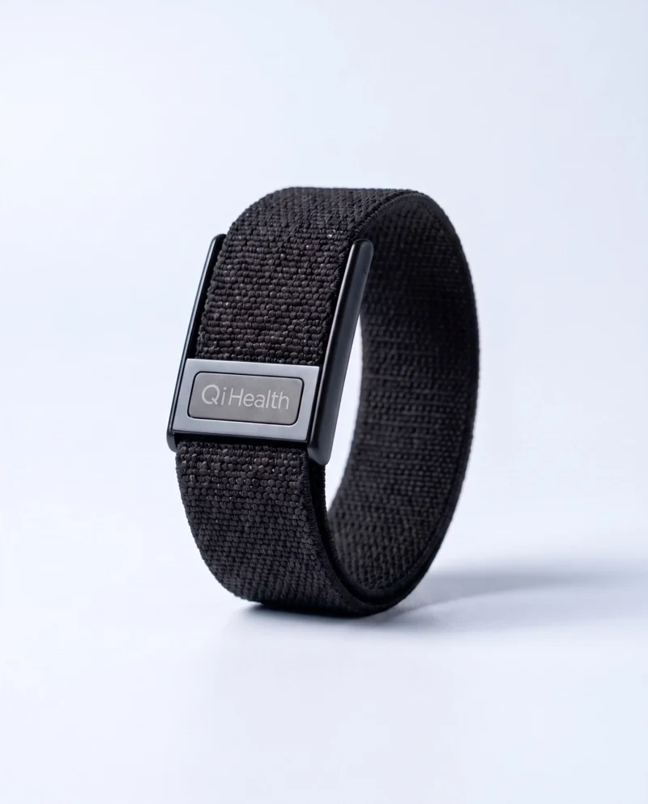
Band Pro incluye correa, base de carga magnética y cable Tipo-C.

Sin pantalla. Sin distracciones. Solo tus datos.
Frecuencia cardiaca, HRV y SpO2 las 24 horas.

Sueño y temperatura de la piel, mientras duermes.
IP68: báñate, entrena y duerme con ella puesta.
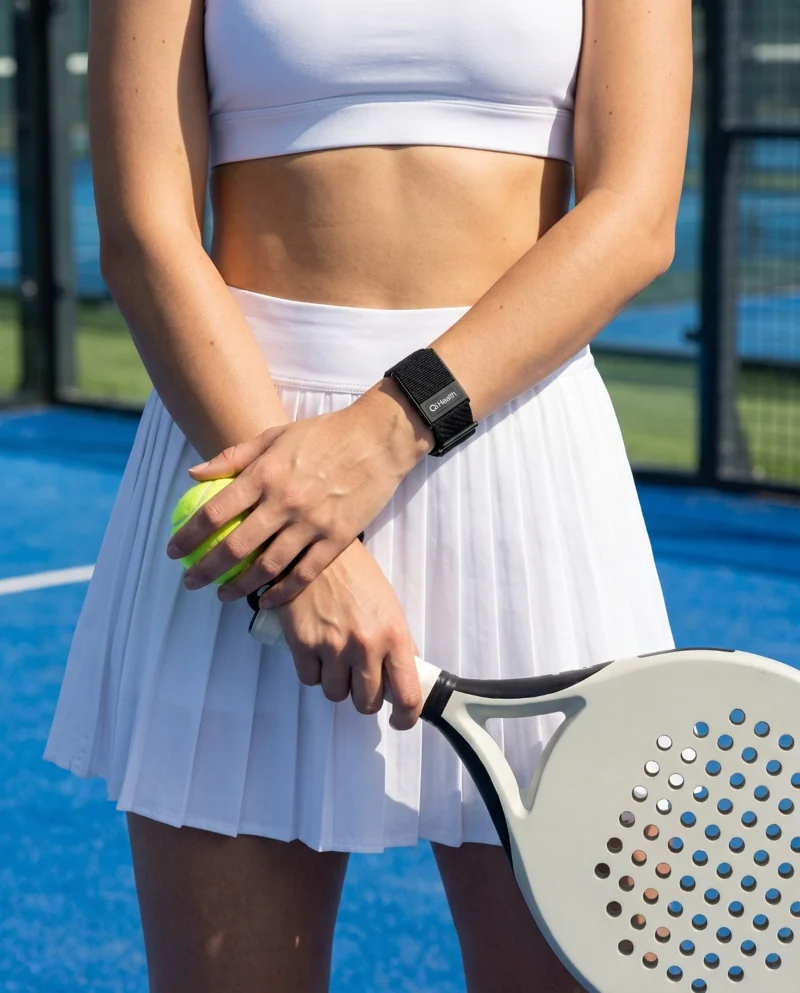
Más de 15 días de batería con uso normal.

Actividad y estrés durante tu día.

Con QiTrax, ves tu glucosa junto a todo lo que mide tu banda.

Correas beige, naranja, marrón y negro.
Producto de bienestar. No es un dispositivo médico.
La Band Pro viene con correa textil del color que elijas.
La Band Pro ya mide siete señales. Con QiTrax, ves tu glucosa junto a todo lo que mide tu banda.

30 días de glucosa, minuto a minuto.

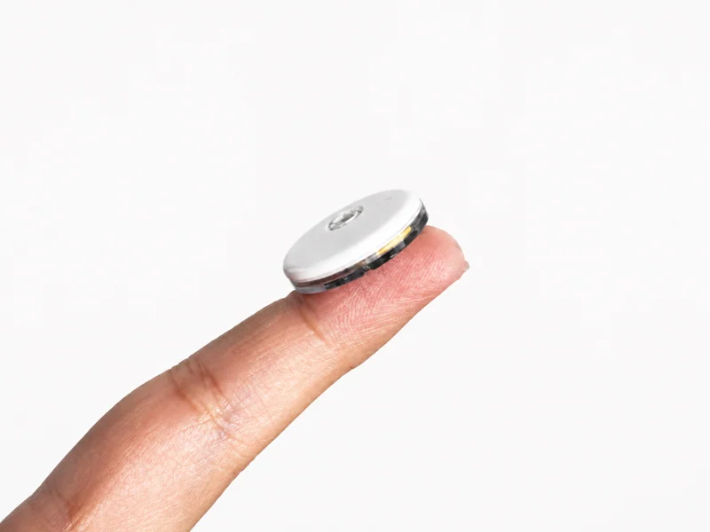
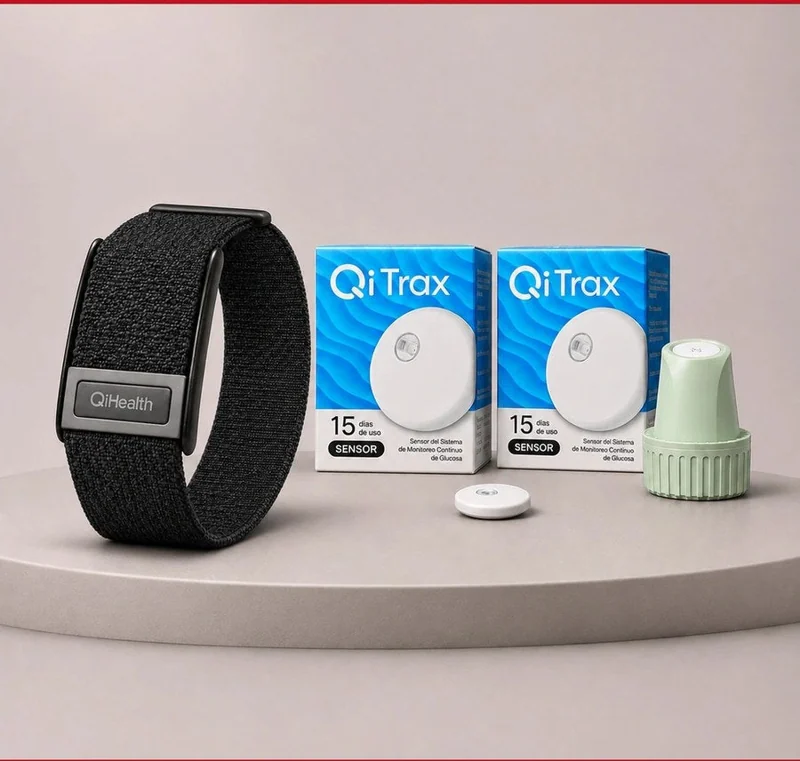
Dos sensores QiTrax, cada uno con su aplicador. 15 días por sensor y 1,440 lecturas al día, sin piquetes ni calibraciones manuales.
Más información
60 días de monitoreo continuo.


Cuatro sensores QiTrax, cada uno con su aplicador. Dos meses de lecturas minuto a minuto que QiCoach organiza en la app QiHealth.
Más información
90 días: el mejor precio por sensor.

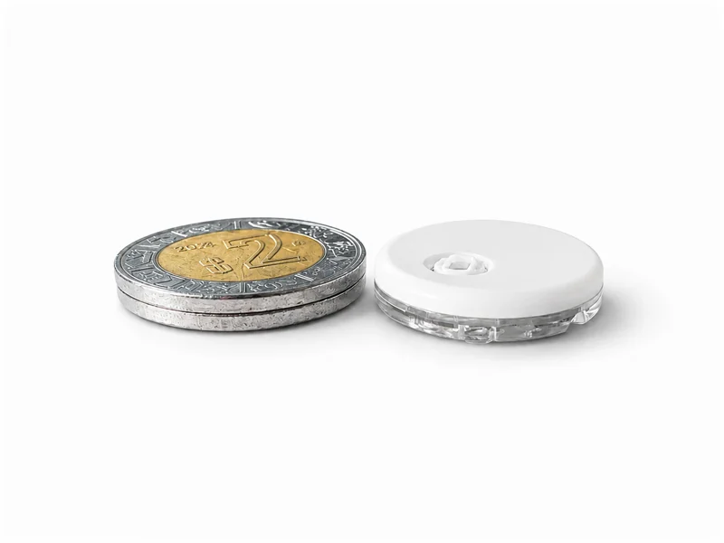
Seis sensores QiTrax con aplicador, alrededor de $1,000 por sensor: noventa días de glucosa continua, sin piquetes, en la app QiHealth.
Más informaciónLa app QiHealth y QiCoach vienen incluidas: QiCoach, nuestra IA, une tus datos para darte una visión más completa de cómo responde tu cuerpo. Elige solo la banda o el kit con dos sensores QiTrax.
¿Necesitas ayuda para elegir? Escríbenos
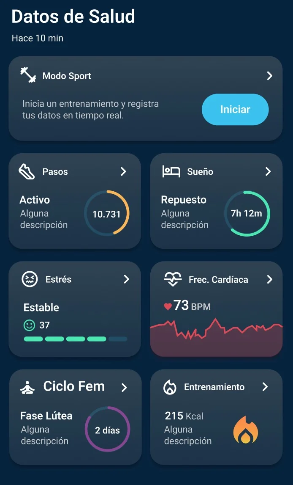

WhatsApp +52 55 4791 4540 · lunes a viernes, 9 a 17 h.
QiHealth Band Pro: producto de bienestar (wellness), no es un dispositivo médico. QiTrax: Sensor CGM · Reg. SSA 2370E2025 · Permiso de publicidad 263300201B2529.
Kit Band Pro + 2 QiTrax
Sin pantalla y sin distracciones: mide siete señales las 24 horas y todo se sincroniza con la app QiHealth.
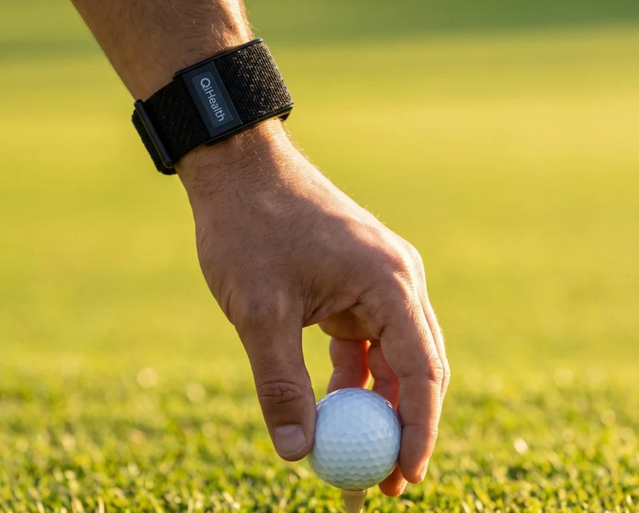
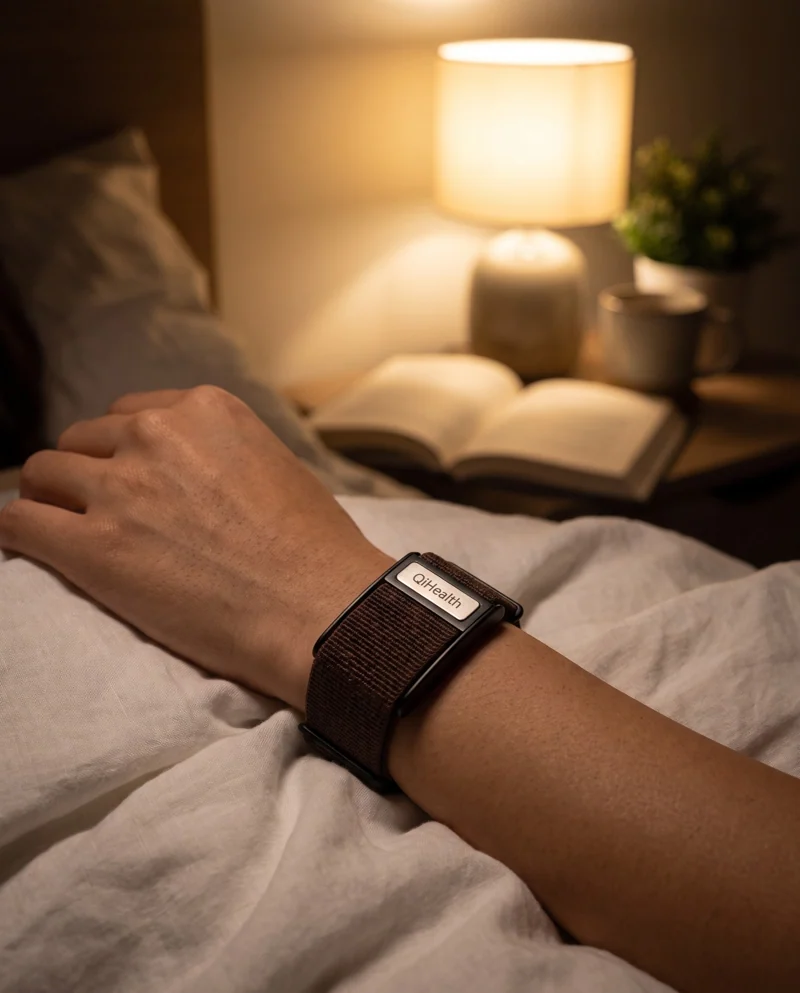
Sin pantalla, ligera y con correa textil. Descubre de cerca lo que llevas en la muñeca.
Antes del primer uso, cárgala por completo en su base magnética. Tarda menos de 2 horas.

Aprox. 2.5 cm arriba del hueso de la muñeca, ajustada pero cómoda.
Ahí ves todo lo que mide tu banda, revisas tu noche cada mañana y hablas con QiCoach.
Suma QiTrax o el Ring Pro a tu Band Pro y ve tu glucosa, tu sueño y tu actividad juntos en la app QiHealth.
 Comprar Band Pro
Comprar Band ProBanda inteligente sin pantalla: siete señales las 24 horas y más de 15 días de batería.
 Descubre el Ring Pro
Descubre el Ring ProAnillo inteligente: sueño, frecuencia cardiaca, SpO2, estrés y actividad, con más de 7 días de batería.
Descubre QiTraxSensor de glucosa de 15 días con 1,440 lecturas al día, sin piquetes.
 Conoce QiCoach
Conoce QiCoachNuestra IA une tus datos para darte una visión más completa de cómo responde tu cuerpo.

Escríbenos por WhatsApp y te ayudamos a elegir tu dispositivo.
Siete señales las 24 horas, sin pantalla. Todo se sincroniza con la app QiHealth, donde QiCoach une tus datos.
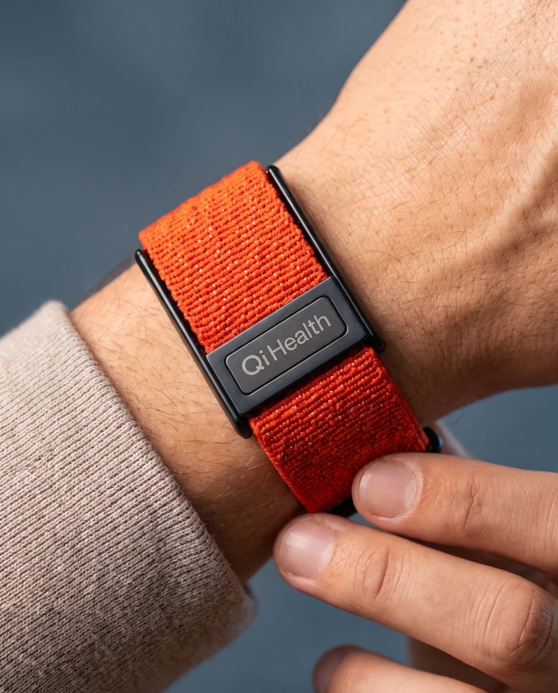
Tu ritmo cardiaco y su variabilidad (HRV), de día y de noche, sin quitarte la banda.

Saturación de oxígeno en sangre, medida desde tu muñeca y sincronizada con la app.
Duerme con ella puesta y revisa cada mañana cómo dormiste en la app QiHealth.
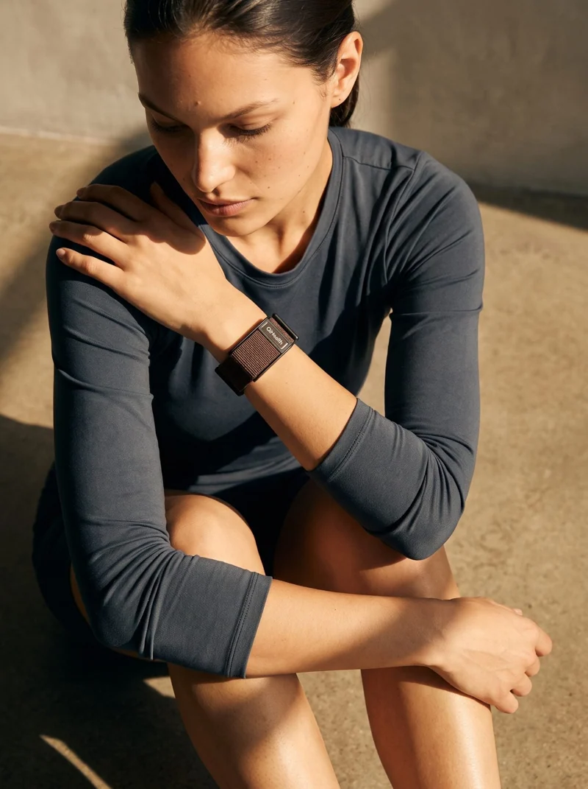
Dos señales más para entender cómo responde tu cuerpo a tu día.
Con una sola carga de uso normal y alrededor de 30 días en espera. Carga en menos de 2 horas.
Resistente al agua: báñate, entrena y duerme con ella puesta, sin quitártela.
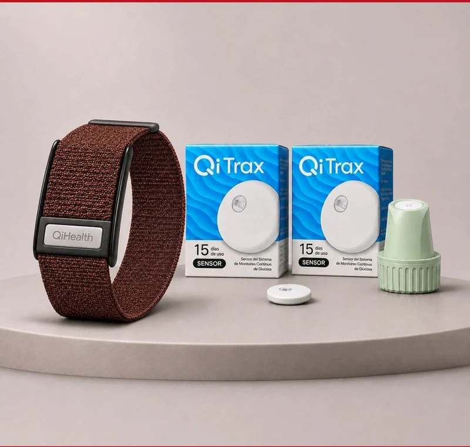
Conéctala con QiTrax y ve tu glucosa junto a todo lo que mide tu banda.
Organiza y presenta tus datos y patrones para facilitar su visualización.
Frecuencia cardiaca, HRV, SpO2, sueño, estrés, actividad y temperatura de la piel, las 24 horas.
Más de 15 días con uso normal y alrededor de 30 días en espera. Se carga en menos de 2 horas con su base magnética.
Sí. Es resistente al agua IP68: puedes bañarte, entrenar y dormir con ella puesta.
La Band Pro guarda hasta 30 días de datos sin sincronizar. Cuando abras la app QiHealth, se actualiza.
No. QiHealth Band Pro es un producto de bienestar (wellness). No es un dispositivo médico y no requiere registro sanitario COFEPRIS.
Tiene 12 meses de garantía con Habits Sync, S.A. de C.V. El envío gratis aplica en zonas seleccionadas.
Solo por WhatsApp al +52 55 4791 4540, de lunes a viernes de 9 a 17 h. No realizamos ni recibimos llamadas.